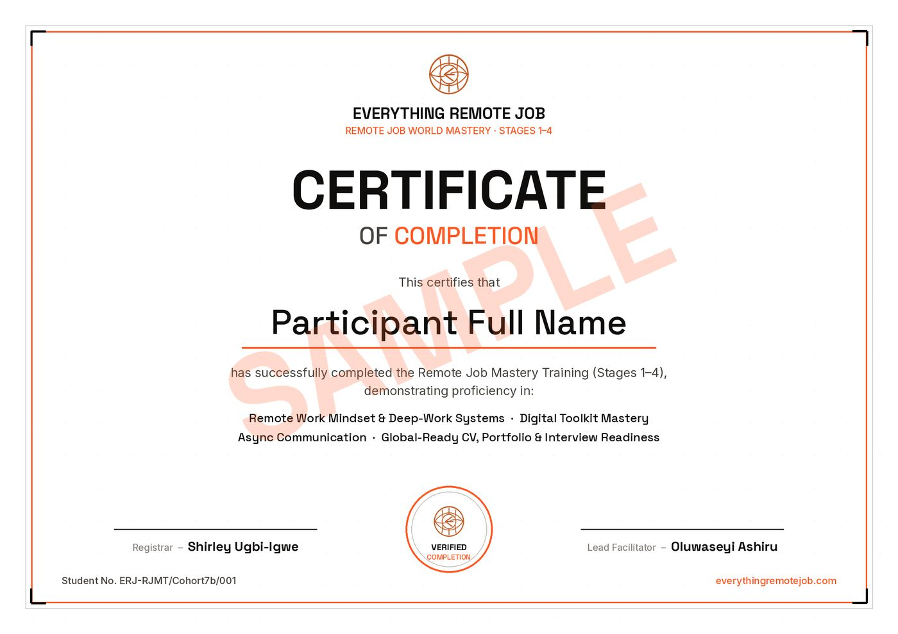

Get Trained And Certified To Work Remotely · Stages 1–4
Build the career assets global employers can read — live, marked, in 20 training days.
Foundation Training is the full live build for people whose search is leaking across more than one point: remote work discipline, tools, async communication, CV, LinkedIn, portfolio and interview evidence. ERJ is accountable for readiness and representation; the market decides the timing of an offer.
Proof of Competence
What You Will Build Across Stages 1–4
Every day produces a real, submittable deliverable. By Stage 4, these become the portfolio that gets you hired — you're not buying a syllabus, you're acquiring competitive global assets.
The Model · Four Problem, Fix It
Your search is a pipeline with four joints.
Supply → Representation → Aim → Conversion. An offer only comes out when all four hold — and Foundation Training covers all four.
The Remote Job Seekers Kit — named boards, companies and salary databases — is delivered the moment you pay, plus the free Global Remote Job Board channel. You will never again wonder where the real roles are.
Stages 2–4 build every asset from scratch: ATS-readable CV, LinkedIn that recruiters find, portfolio, async writing samples and the STAR video — all AI-assisted, all yours to keep.
Stage 4 installs a weekly targeting and application system — which roles, which companies, which regions — powered by the SMART APPLY prompt, so effort goes where offers actually come from.
Async communication mastery (Stage 3), interview coaching and salary negotiation turn replies into signed offers — and we hold this joint with you until you're hired.
The Build · Stages 1–4
Four stages. Twenty days. A hiring-ready you.
Four 5-day sprints. Every day ends with a real deliverable.
Remote Mindset Blueprint
- Protect your peak cognitive window with two 90-min Deep Work blocks daily
- Execute the Pomodoro Protocol — four 25-min sprints, zero self-interruption
- Write 3 measurable KPIs each morning, submit a structured EOD report each evening
- Complete a full physical & digital workspace audit
The Digital Toolkit
- Run screen shares, annotation & chat in Zoom, Google Meet & Microsoft Teams
- Configure cloud recordings with auto-transcription and protected links
- Build a structured project board in Asana, Trello or ClickUp
- Build AI Fluency — prompt craft, AI-assisted drafting and reviewing, and knowing when not to use it
- Co-edit documents in Suggestion Mode with full version history
Async Communication Mastery
- Write Zero-Follow-Up emails that never generate a clarifying reply
- Apply the Batch Message Protocol in Slack & Teams
- Translate warm tone across text without losing directness
- Build your personal "Working With Me" manual + tech fallback plan
Start Your Remote Career
- Build a Remote-First, ATS-compliant CV
- Write a remote-optimised LinkedIn Zone-1 summary
- Curate a 2–3 project digital portfolio with read-me briefs
- Deliver a 2-min STAR-format video interview response
Looking for the sourcing & placement system that comes after the build? That's Stage 5 — Job Application DFY → Not sure whether you need the live cohort at all? Read the honest comparison against the self-paced pack.
The Math
Staying local vs. going global.
One entry-level global role pays back the entire programme fee in under a week.
High inflation exposure. Local administrative overhead. A salary ceiling that erodes in real terms every year.
Hard-currency protection. Tuition is recovered in the first 3 days of remote work.
Certification
Finish certified. Prove it anywhere.
Complete Stages 1–4 and receive the official Remote Job Foundation Training Training certificate — verifying your remote-work mindset, digital toolkit, async communication and global-ready CV, portfolio & interview readiness.

Choose your hour
Three classes. One programme.
We have expanded to make you employable for that remote job — whatever your day already looks like. Same four stages, same modules, same fee, same certificate. The only thing that changes is when you sit down.
Undergraduates, entry-level, and anyone not gainfully employed yet.
Your evenings are your own, so this track takes the earlier hour — done by eight, with the rest of the night for the sprint work. Starting without a job history is a position we build from, not around.
Take the 7 PM class →The typical nine-to-five professional who can train on weekdays.
The later hour exists for one reason: Lagos traffic and a 6 PM close do not make a 7 PM class. This one starts after you are home, fed and sitting down.
Take the 8 PM class →The 8 AM to 8 PM professional whose weekdays are simply not available.
Longer sessions, fewer of them, across more calendar weeks — because a track you can actually attend beats a shorter one you keep missing. Nothing is cut; it is redistributed.
Take the weekend class →Pick the track you can genuinely keep for the whole programme — attendance, not ambition, is what separates the people who finish. Not sure which fits? Run the free diagnosis first →
Investment
Choose how you commit.
Full programme — all 4 stages, 20 training days, every workbook and template, AI Fluency, full LMS portal access and priority support. Pay in full, take stages separately, or — if Foundation Training is confirmed as your right door — reserve Cohort 10 while you complete the balance.
- Full immediate access — all 4 stages unlocked
- Lowest total price, save ₦120,000
- Lifetime cohort resources & templates
- AI Fluency — prompt craft, AI-assisted output and the AI tools global teams now expect
- Full LMS portal access + priority support
- Stage 1 ₦70,000 · Stage 2 ₦130,000 · Stage 3 ₦70,000 · Stage 4 ₦100,000
- Lower upfront commitment, same teaching and same cohort
- AI Fluency is built into every stage
- Total if you take all four this way: ₦370,000
Reserve the full ₦250,000 programme with ₦50,000.
The ₦50,000 is credited in full toward Foundation Training; the remaining ₦200,000 is due by 6:00 PM WAT on Sunday 30 August. This is not a discount or long-term instalment plan. After the Registrar confirms Foundation Training is the right ERJ door, the official Business Play Ltd bank-transfer details are sent privately. If your plans change, the reservation can move to the next cohort or be refunded on request, less applicable bank/payment service charges.
After payment, send your receipt on WhatsApp to confirm enrolment — your LMS login arrives within 24 hours. Not sure this is the right door? Run the free diagnosis or message AUDIT before you pay. Prefer a single stage or bank transfer? See all options →